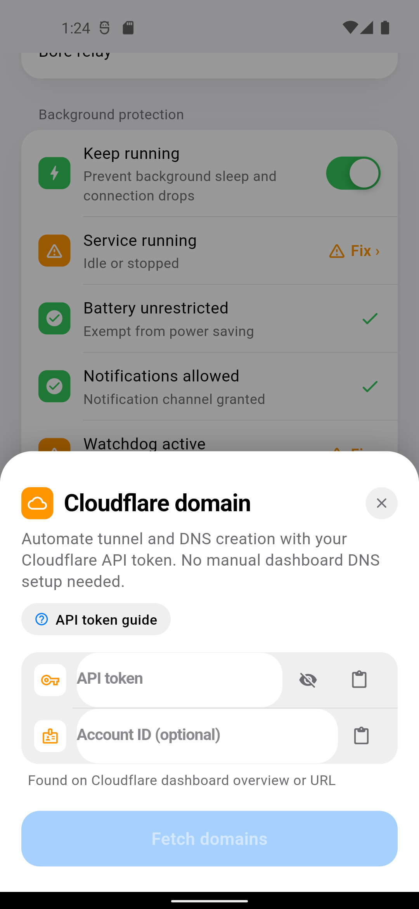
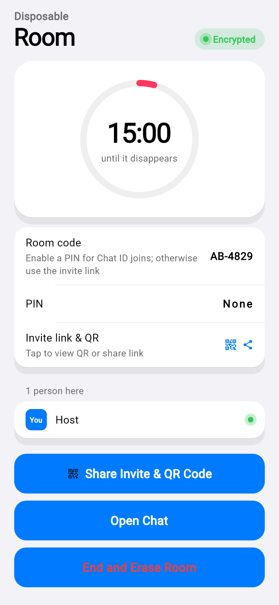

Native app launched · Screens documented
CloudPocket
UI walkthrough & control reference
Reviewed on 28 October 2026 using an existing Pixel 5 API 32 x86_64 emulator and an isolated Flutter 3.13.9 / Dart 3.1.5 SDK. A debug run was built and launched; no release APK was built. Native screenshots show the actual emulator. Flutter-rendered fixtures use the app widgets at 393 × 852 logical pixels with loaded fonts, controlled providers and synthetic data. Fixtures are explicitly labelled and are not proof of Android plugin behavior.
Each screenshot is labelled by evidence type. Click a screenshot for its full resolution. No external scripts, fonts or network requests are used by this guide.

| Header / close | Names the setup task and dismisses the sheet. |
|---|
| API token guide | Opens the Cloudflare tab of Tunnel Setup Guide. |
|---|
| API token | Sensitive input with reveal/hide and paste buttons. Their containing width now fits both buttons; the native review reproduced a 52-pixel overflow before this fix. |
|---|
| Account ID (optional) | Optional account selection hint, with a paste button. |
|---|
| Fetch domains | Enabled when a token is present; fetches authorized accounts/zones. |
|---|
| Domain selection / subdomain / Save domain | Appear after fetching zones and automate tunnel/DNS setup. Not exercised against a real account. |
|---|

| Room / Encrypted badge | Room status presentation. The badge is not proof that relays cannot obtain admission key material; see the security limitations below. |
|---|
| Countdown ring | Remaining lifetime and progress; pending-first-join state is separate from the authoritative running countdown. |
|---|
| Room code | Copies the dynamic code when useful. The caption explains that Chat ID joins need a PIN; token-only rooms use invite links. |
|---|
| PIN | Displays/copies the host-configured PIN where present. These screenshots contain fixtures, not user credentials. |
|---|
| Invite link & QR | Opens the invitation sheet, including QR/link sharing and browser-password options. |
|---|
| People / app/browser participant counts | Room participant statistics. |
|---|
| Open Chat | Joins the host chat with its room token and PIN. Previously token-only hosts omitted their own token. |
|---|
| End and Erase Room | Confirms ending the room, disconnecting participants, clearing chat RAM and unlinking cached media. It does not securely shred flash storage. |
|---|

| Room back control | Returns to the room dashboard. Closing chat no longer leaves asynchronous callbacks calling setState on a disposed screen. |
|---|
| Room code / timer | Uses the server's roomCode and remainingSeconds fields. |
|---|
| Message timeline | Loads the server's messages history and distinguishes text, system and media envelopes. A real local connection verified the rendered history fixture. |
|---|
| + attachment | Selects supported room media and streams an upload. Native requests now include room credentials for protected media endpoints. |
|---|
| Message field / send arrow | Sends typed text, using AES-GCM payload encryption when a room secret is available. |
|---|
| Media bubble | Opens the private viewer. Returning restores the chat's screenshot guard. |
|---|
| Filename / view-only caption | Identifies the media and explains the in-app viewing policy. |
|---|
| Text viewer | Displays a bounded text preview. The screenshot uses a small synthetic text fixture. |
|---|
| Image / PDF / audio / video variants | The same screen selects image preview, page navigation or native player controls by media type. Native codec/PDF playback was not exercised on a physical ARM64 device. |
|---|
| Dismiss & Purge | Closes the view and removes temporary viewer copies where created. It does not promise secure flash erasure. |
|---|
| Screenshot protection | Native guarded screens were not captured or modified to bypass FLAG_SECURE. The image is from Flutter's test renderer, not an Android screenshot of protected content. |
|---|